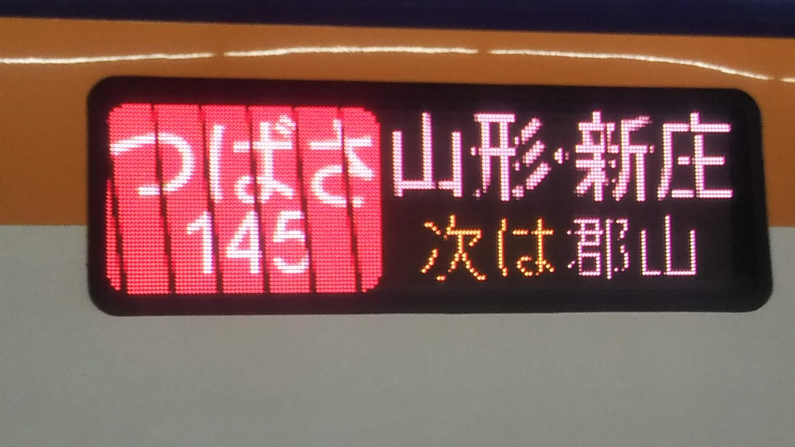
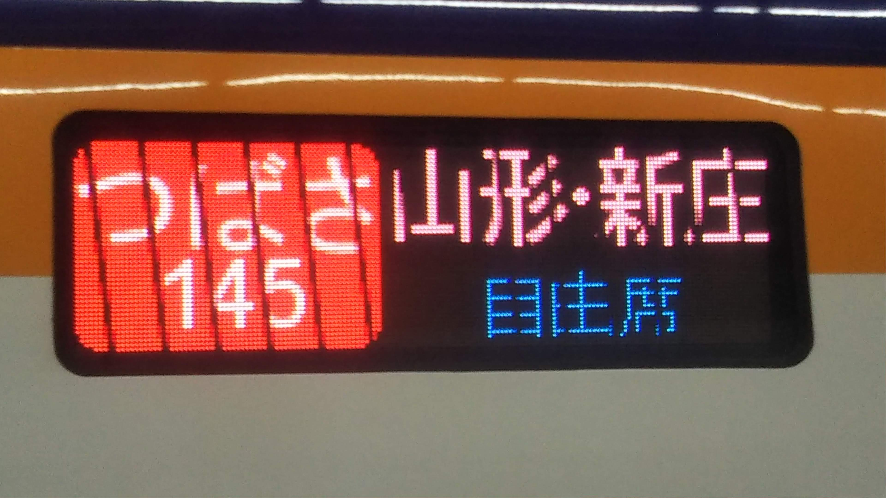
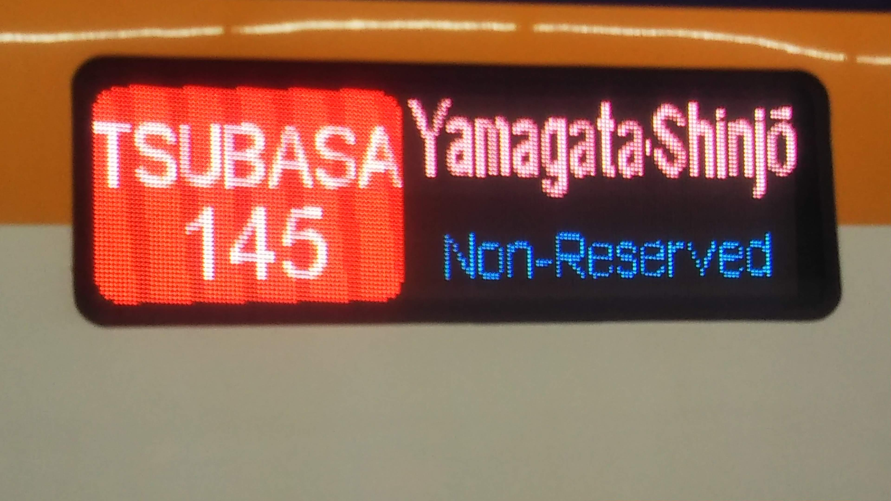
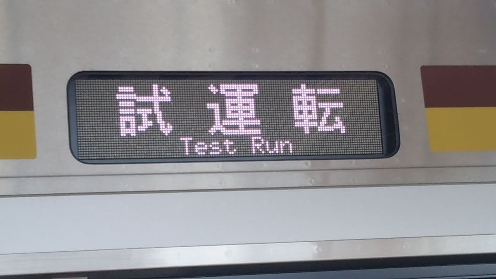
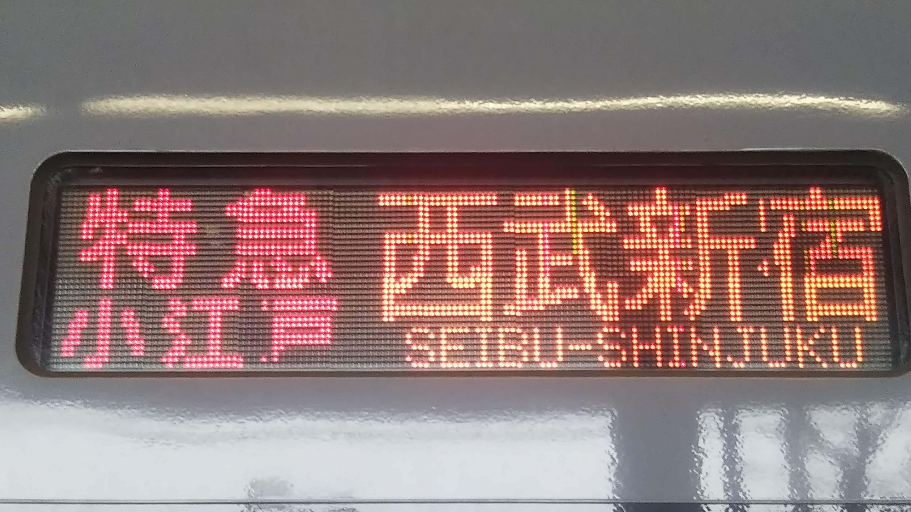
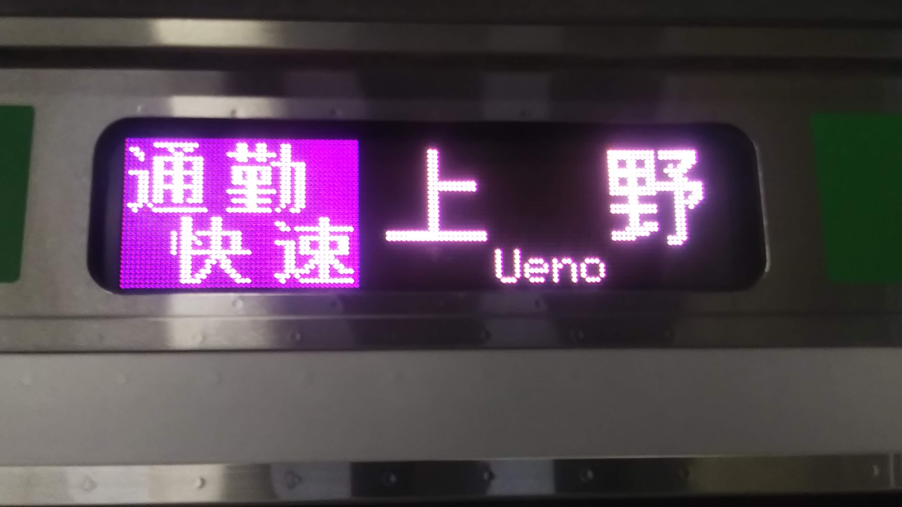
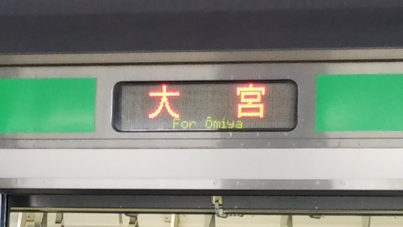
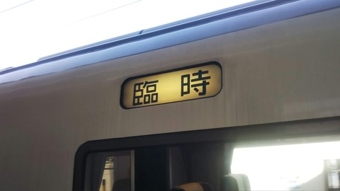
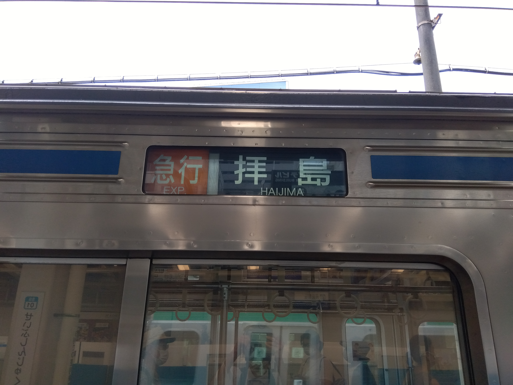

<html>
    <body bgcolor="005050" text="ffffff"></body>
    <head>
        <meta charset="UTF-8">
                 <meta name="viewport" content="width=device-width">
    </head>
    <title>方向幕のページ</title>
    <h1>方向幕のページ</h1>
    205湘南色が撮影した方向幕を載せるだけのページ<br>
    一部今では見れない方向幕も<br><br>
    <br>
    <br>
    <br>
    つばさ145号新庄行き 2022年1月9日 宇都宮駅<br>
    <br>
    試9631M 2022年1月9日 宝積寺駅<br>
    <br>
    特急小江戸号西武新宿行き 2021年3月25日 本川越駅<br>
    <br>
    通勤快速上野行き 2021年2月19日 宇都宮駅<br>
    <br>
    普通大宮行き 2022年4月10日 栗橋駅<br>
    <br>
    臨時 2021年2月20日 新前橋駅<br>
    <br>
    急行拝島行き 2022年7月3日 西武新宿駅<br>
    <br>
    修学旅行 2022年11月7日 宇都宮駅
    <br><br>
    <a href="https://10102site.github.io/saro/">戻る</a>   
</html>
